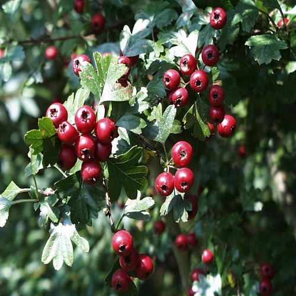

Les arbustes
6 arbustes à connaitre
-

Qu'est-ce que le genêt?
Les genêts se déclinent en une multitude d’espèces et cet arbuste est facilement reconnaissable grâce à ses fleurs qui ressemblent à un papillon.
La variété la plus répandue est le genêt à balai ou cytisus scoparius qui est un petit arbuste dont les tiges sont longues et souples.
Les feuilles sont quant à elles composées de trois folioles et ces dernières apparaissent durant le printemps.
Parmi les autres variétés, on retrouve les genêts du Portugal et les genêts d’Espagne.
Les premiers ont des fleurs blanches et brillantes alors que ceux d’Espagne se caractérisent par des tiges longues et lisses et par des petites fleurs.
Cet arbuste se plante durant la période automnale ou printanière et toujours hors période de gel.Quelles sont les vertus du genêt sur la santé ?
Les vertus du genêt ont été découvertes il y a très longtemps : en 1701. A cette époque, on utilisait cet arbuste pour augmenter le volume des urines.
Aujourd’hui, le genêt est efficace pour traiter la néphrite,
les rhumatismes, l’hydropisie (concentration anormale d’un liquide organique dans une cavité ou tissu de l’organisme) et l’hépatite chronique.
Cette plante est également efficace contre la goutte ou encore l’urémie, car elle permet la purification du sang. -

Qu'est-ce que l'argousier ?
L’argousier (Hippophae rhamnoides) -à ne pas confondre avec l'arbousier- encore appelé saule épineux ou argousier faux nerprun, est un arbuste de 3 à 5 m de haut de la famille des Eléagnacées.
Il pousse spontanément dans les zones tempérées ou subtropicales d’Europe et d’Asie où on le rencontre aussi bien dans les zones montagneuses, que sur les dunes littorales.
C’est un arbuste très ramifié au port dense et un peu évasé dont les rameaux gris très épineux portent des feuilles étroites et allongées au revers gris argenté qui sont assez semblables à celles du sauleQuelles sont les vertus de l'argousier sur la santé ?
Les grecs donnaient des baies d’argousier à leurs chevaux, pour booster leur croissance et lustrer leur robe, d’où son nom d’hippophae.
De longue date inscrit dans les pharmacopées traditionnelles chinoise et tibétaine, l’argousier est la baie orange vif de cet arbuste d’Asie centrale.
Présent dans l’est de l’Europe, en Mongolie, en Russie et dans les pays scandinaves, l’argousier a même été implanté au Québec, pour prévenir l’érosion des sols.
Dans les pays d’Europe de l’est, l’argousier se mange. Les Russes ne s’y étaient pas trompés, qui en avaient donné à leurs cosmonautes, sous forme de miel.
L’ananas de Sibérie est une véritable petite bombe de vitamine C : un dopant naturel, que les Tibétains utilisent couramment en cas d’infections respiratoires.
De fait, l’argousier contient vingt fois plus de vitamine C qu’une orange, de l’ordre de 0, 6 gramme pour cent grammes de fruit.
Or, la vitamine C provient exclusivement de l’alimentation. D’où son grand intérêt en cas de fatigue ou de stress
De plus, les baies d’argousier sont riches en flavonoïdes, substance qui protège les plantes des virus. Les flavonoïdes boostent le système immunitaire, en activant à la fois les globules blancs, et les globules rouges de la moelle épinière.
Il est ainsi doublement recommandé en cas de convalescence. Enfin, l’argousier contient des vitamines E anti-oxydantes et de la provitamine A – carotènes alpha et bêta- à partir desquelles l’organisme synthétise la vitamine A -
Qu'est-ce que l'aronia ?
L'aronia est un arbuste de taille modeste (comprise entre 1,5 et 2,5 m) qui vient de l'est des Amériques. Le genre, qui appartient à la famille des Rosacées, comprend trois espèces : Aronia melanocarpa, Aronia arbutifolia et Aronia prunifolia,
hybride naturel entre Aronia melanocarpa et Aronia arbutifolia. De port dressé et plus ou moins ouvert, le tronc se ramifie très rapidement pour s'étaler sur 2 ou 3 mètres. Les feuilles caduques sont lancéolées et leurs marges, finement dentées.
De couleur vert brillant plus ou moins foncé au printemps, elles se parent de rouge à l'automne (rouge flamboyant pour Aronia arbutifolia ; orange à rouge pourpre pour Aronia melanocarpa et Aronia prunifolia).
Les gracieuses petites fleurs ne sont pas sans nous rappeler celles de leurs cousins, les pommiers, les cerisiers, les ronces et autres rosacées.
Réunies en corymbes à l'extrémité des rameaux, elles sont roses ou blanches ; la floraison, relativement courte (un mois), démarre selon les climats et les variétés vers avril et se termine, pour les plus tardives, en juillet.Quelles sont les vertus de l'Aronia sur la santé ?
L’Aronia se distingue par un feuillage caduc drageonnant et rustique produisant des baies d’un noir puissant. Sa consommation remonte à des millénaires. Ce sont les Indiens qui utilisaient ses baies pour se nourrir et se soigner.
La consommation régulière d’aronia peut intervenir comme une solution face à de nombreux problèmes de santé chroniques tels que les problèmes digestifs.
Comme le thé vert contenant des catéchines, l’aronia augmente également l’activité des enzymes impliquées dans la digestion, a un effet positif sur le métabolisme hépatique et les processus métaboliques.
Elle peut également intervenir dans la prévention et le traitement des hémorroïdes – grâce aux anthocyanes qui réduisent la fragilité des vaisseaux sanguins. Ainsi, boire du jus d’aronia aide à lutter contre les hémorroïdes.
En raison de la teneur très élevée (la plus élevée de tous les fruits et légumes) en antioxydants, l’aronia devrait devenir un ingrédient courant dans l’alimentation des personnes à risque de crise cardiaque et d’accident vasculaire cérébral.
Dans la prévention du cancer. De nombreuses expériences et études ont montré que les souris recevant des polyphénols développaient moins de tumeurs et moins de métastases étaient observées (malgré le régime carcinogène).
L’ensemble des composés présents dans l’aronia détoxifie et réduit certaines toxines et forme des complexes insolubles avec d’autres, les éliminant du corps.
Les anthocyanes présentes dans l’aronia améliorent la microcirculation, réduisant la fragilité des capillaires, ce qui se traduit, entre autres, par pour une meilleure vision nocturne et une meilleure acuité visuelle.
Les bioflavonoïdes contribuent au retard de la progression des maladies oculaires: glaucome, cataractes et dégénérescence maculaire de la rétine (DMLA). -
Qu'est-ce que le caprier ?
Les câpriers sont des arbrisseaux condimentaires, bien connus pour leurs boutons floraux, les câpres, que l'on utilise couramment dans la cuisine méditerranéenne.
Le câprier est un arbrisseau buissonnant doté de nombreux et longs rameaux souples et retombants. Les feuilles simples, ovales, vertes et coriaces, sont,
lorsque le câprier pousse dans son milieu naturel, persistantes. À la fin du printemps, les premiers boutons floraux apparaissent ; ce sont eux qui sont récoltés de juillet à août, pour la confection des câpres au vinaigre.
Les fleurs sont abondantes mais éphémères ; leur durée de vie n'excède pas une journée.
La croissance du câprier est lente. Au bout de plusieurs années de culture dans de bonnes conditions, vous obtiendrez un arbrisseau de 0,50 m de haut et de 1 m d'envergure.
Les câpriers se plaisent sur des sols secs et très bien drainés. Une terre pauvre et caillouteuse fait très bien l'affaire. Ajoutez à cela une exposition bien ensoleillée et vous avez tous les ingrédients pour réussir sa culture, ou presque !
Du fait de la fragilité de son système racinaire, le câprier ne supporte pas toujours les transplantations.Quelles sont les vertus des capres sur la santé ?
Bien que très salées et dotées d’un goût fort, les câpres sont très bénéfiques pour notre santé. On trouve ainsi dans les câpres un très grand nombre d’éléments nutritionnels indispensables au bon fonctionnement de l’organisme.
Ainsi, consommer des câpres permet de donner au corps les apports journaliers recommandés en magnésium: idéal pour stimuler les performances cognitives et éviter les courbatures en cas de pratique physique intense ;
calcium: indispensable à la bonne solidité des os et des dents, en potassium, en vitamines: A, B et C et en flavonoïdes, antioxydants qui protègent les cellules du corps d’un vieillissement prématuré dû aux attaques des radicaux libres.
les capries peuvent servir en apéritif, tonique, il peut faciliter l’élimination des toxines dans la rate et le foie grâce à leurs vertus diurétiques;
elles permettent l’entretien et la bonne santé des parois des veines et artères, la stimulation de l’appétit, notamment dans le cas d’anorexie ou de perte d’appétit chronique;
elles soulage des infections comme les plaies ou affections cutanées légères grâce à leur effet antiseptique et antifongique lorsqu’elles sont utilisées dans les cosmétiques ou pour un usage sur la peau. -
Qu'est-ce que le goumi du Japon ?
Les câpriers sont des arbrisseaux condimentaires, bien connus pour leurs boutons floraux, les câpres, que l'on utilise couramment dans la cuisine méditerranéenne.
Le câprier est un arbrisseau buissonnant doté de nombreux et longs rameaux souples et retombants. Les feuilles simples, ovales, vertes et coriaces, sont,
lorsque le câprier pousse dans son milieu naturel, persistantes. À la fin du printemps, les premiers boutons floraux apparaissent ; ce sont eux qui sont récoltés de juillet à août, pour la confection des câpres au vinaigre.
Les fleurs sont abondantes mais éphémères ; leur durée de vie n'excède pas une journée.
La croissance du câprier est lente. Au bout de plusieurs années de culture dans de bonnes conditions, vous obtiendrez un arbrisseau de 0,50 m de haut et de 1 m d'envergure.
Les câpriers se plaisent sur des sols secs et très bien drainés. Une terre pauvre et caillouteuse fait très bien l'affaire. Ajoutez à cela une exposition bien ensoleillée et vous avez tous les ingrédients pour réussir sa culture, ou presque !
Du fait de la fragilité de son système racinaire, le câprier ne supporte pas toujours les transplantations.Quelles sont les vertus des baies du goumi du Japon sur la santé ?
Bien que très salées et dotées d’un goût fort, les câpres sont très bénéfiques pour notre santé. On trouve ainsi dans les câpres un très grand nombre d’éléments nutritionnels indispensables au bon fonctionnement de l’organisme.
Ainsi, consommer des câpres permet de donner au corps les apports journaliers recommandés en magnésium: idéal pour stimuler les performances cognitives et éviter les courbatures en cas de pratique physique intense ;
calcium: indispensable à la bonne solidité des os et des dents, en potassium, en vitamines: A, B et C et en flavonoïdes, antioxydants qui protègent les cellules du corps d’un vieillissement prématuré dû aux attaques des radicaux libres.
les capries peuvent servir en apéritif, tonique, il peut faciliter l’élimination des toxines dans la rate et le foie grâce à leurs vertus diurétiques;
elles permettent l’entretien et la bonne santé des parois des veines et artères, la stimulation de l’appétit, notamment dans le cas d’anorexie ou de perte d’appétit chronique;
elles soulage des infections comme les plaies ou affections cutanées légères grâce à leur effet antiseptique et antifongique lorsqu’elles sont utilisées dans les cosmétiques ou pour un usage sur la peau. -

Qu'est-ce que l'Aubepine ?
Les câpriers sont des arbrisseaux condimentaires, bien connus pour leurs boutons floraux, les câpres, que l'on utilise couramment dans la cuisine méditerranéenne.
Le câprier est un arbrisseau buissonnant doté de nombreux et longs rameaux souples et retombants. Les feuilles simples, ovales, vertes et coriaces, sont,
lorsque le câprier pousse dans son milieu naturel, persistantes. À la fin du printemps, les premiers boutons floraux apparaissent ; ce sont eux qui sont récoltés de juillet à août, pour la confection des câpres au vinaigre.
Les fleurs sont abondantes mais éphémères ; leur durée de vie n'excède pas une journée.
La croissance du câprier est lente. Au bout de plusieurs années de culture dans de bonnes conditions, vous obtiendrez un arbrisseau de 0,50 m de haut et de 1 m d'envergure.
Les câpriers se plaisent sur des sols secs et très bien drainés. Une terre pauvre et caillouteuse fait très bien l'affaire. Ajoutez à cela une exposition bien ensoleillée et vous avez tous les ingrédients pour réussir sa culture, ou presque !
Du fait de la fragilité de son système racinaire, le câprier ne supporte pas toujours les transplantations.Quelles sont les vertus de l'aubépine ?
Bien que très salées et dotées d’un goût fort, les câpres sont très bénéfiques pour notre santé. On trouve ainsi dans les câpres un très grand nombre d’éléments nutritionnels indispensables au bon fonctionnement de l’organisme.
Ainsi, consommer des câpres permet de donner au corps les apports journaliers recommandés en magnésium: idéal pour stimuler les performances cognitives et éviter les courbatures en cas de pratique physique intense ;
calcium: indispensable à la bonne solidité des os et des dents, en potassium, en vitamines: A, B et C et en flavonoïdes, antioxydants qui protègent les cellules du corps d’un vieillissement prématuré dû aux attaques des radicaux libres.
les capries peuvent servir en apéritif, tonique, il peut faciliter l’élimination des toxines dans la rate et le foie grâce à leurs vertus diurétiques;
elles permettent l’entretien et la bonne santé des parois des veines et artères, la stimulation de l’appétit, notamment dans le cas d’anorexie ou de perte d’appétit chronique;
elles soulage des infections comme les plaies ou affections cutanées légères grâce à leur effet antiseptique et antifongique lorsqu’elles sont utilisées dans les cosmétiques ou pour un usage sur la peau.